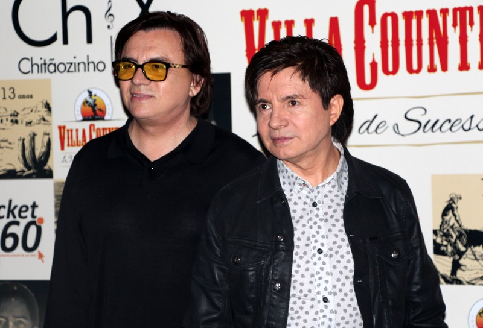

Chitãozinho & Xororó é uma dupla brasileira de música sertaneja formada pelos irmãos José Lima Sobrinho e Durval de Lima. Chitãozinho & Xororó são recordistas em vendas de discos no Brasil: eles venderam mais de 37 milhões de álbuns e ganharam cinco prêmios Grammy Latino. Eles foram creditados por abrir espaço para a música sertaneja nas rádios e televisão a partir da década de 1980 e influenciaram diversos artistas do gênero.